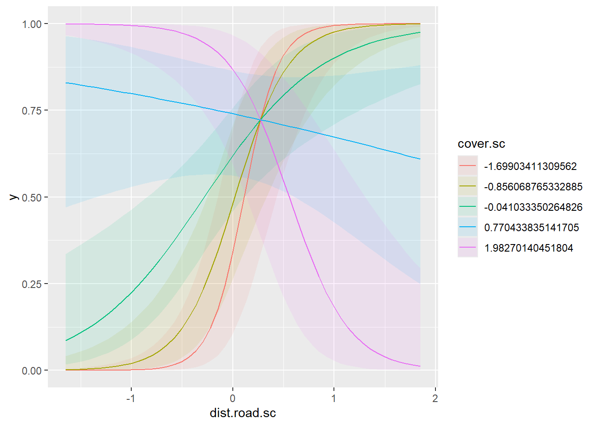

Objective: Create a report using Markdown that presents code, results, and summarized findings that evaluates a hypothesis reagarding the occurence of lynx (Lynx canadensis) in the southern Rocky Mountains.
Overview
A colleague sampled the occurrence (0 or 1) of Canada lynx at 75 grid cells using camera-traps. They are interested in you helping fit a model to estimate the occurrence probability of lynx and evaluate their hypothesis.
Data and Hypothesis
A colleague used camera traps to sample whether a lynx was present (1) or assumed absent (0) at each grid cell or ‘site’ (y) during the winter (December to February); we will assume there are no false-positives or false-negatives in these data. They designed the sampling and site selection such they had variation in two important covariates: the Euclidean distance the camera was from the nearest road (dist.road) and the percentage of forest cover (cover) at the site. Their hypothesis is that lynx will avoid human activity by occurring further from roads when they are not under cover, but will occur near roads that are under cover as they are able to remain hidden.
To do
Fit the data (lynx.data.csv) using a single model that allows you to evaluate the hypothesis of your colleague.
interpret coefficients (what they mean exactly)
make prediction plot(s)
summarize results and evaluate hypothesis support or not
provide any nuance in findings that are outside of the core hypothesis
Modeling
To represent the hypothesis about the occurrence of Lynx, I fit a binomial regression model with a logit link and an interaction between the two variables of interest (scaled and centered), the Euclidean distance the camera was from a road (dist.road) and the percentage of forest cover (cover). This interaction allows the slope of one variable to vary across values of the other variable. The interpretation of estimate coefficients and predictions will allow me to evaluate the hypothesis. I will use a Type I error rate of \(\alpha = 0.05\) to determine statical clarity.
dat=read.csv("lynx.data.csv")# Scale and center the covariates and create new columnsdat$dist.road.sc=scale(dat$dist.road)dat$cover.sc=scale(dat$cover)#Fit modelmodel=glm(y~dist.road.sc*cover.sc, family =binomial(link="logit"),data=dat)#Look at estimated coefficientssummary(model)
Call:
glm(formula = y ~ dist.road.sc * cover.sc, family = binomial(link = "logit"),
data = dat)
Coefficients:
Estimate Std. Error z value Pr(>|z|)
(Intercept) 0.5149 0.3300 1.560 0.11871
dist.road.sc 1.6223 0.5034 3.222 0.00127 **
cover.sc 0.6938 0.3730 1.860 0.06284 .
dist.road.sc:cover.sc -2.5295 0.6480 -3.904 9.48e-05 ***
---
Signif. codes: 0 '***' 0.001 '**' 0.01 '*' 0.05 '.' 0.1 ' ' 1
(Dispersion parameter for binomial family taken to be 1)
Null deviance: 102.353 on 74 degrees of freedom
Residual deviance: 62.346 on 71 degrees of freedom
AIC: 70.346
Number of Fisher Scoring iterations: 6
Results
We see that the conditional effect of dist.road.sc and the interaction effect of the two variables, dist.road.sc:cover.sc, are both statistically clearly different than zero. The intercept represents the occurrence probability on the logit scale (0.5149) at the mean level (i.e., scaled variables = 0) of both variables, which translates to a probability of occurence of 0.62 (i.e. plogis(0.5149)). The effect of dist.road.sc is the conditional effect on the logit-scale when cover.sc is at its mean value (i.e., 0.45, untransformed). The coefficient being positive indicates that when cover is at the mean level, increasing distances from the nearest road leads to increasing probability of lynx occurrence.
The effect of cover.sc is the conditional effect on the logit-scale when dist.road.sc is at its mean value (i.e., 962 m, untransformed). The coefficient being positive indicates that when dist.road.sc is at the mean level, increasing cover leads to increasing probability of lynx occurrence. However, this effect was not statistically clearly different zero.
The effect of the interaction, dist.road.sc:cover.sc, is how the slopes/coefficients of each conditional effect is modified when both variables are not at the mean value (i.e., 0). Since this effect is statistically clearly different than zero, we know that we can’t understand the occurrence probability of lynx by just knowing cover or just knowing distance to the nearest road. We need both these values, as the slope of one variable changes in the context of the other variable. Since the estimated interaction effect was negative, we know that when either cover or dist.road is below the mean (<0), but not both, occupancy will be higher than the implied probability of the intercept (0.62). However, if both variables are below their means (<0) or above the means (>0) than occupancy will be lower than the implied probability of the intercept. To visualize and fully evaluate the hypothesos, I will plot the predicted occupancy of lynx under both combinations of cover and dist.road.
# Predict the probability of occurencemarginaleffects::plot_predictions(model,condition=c("dist.road.sc","cover.sc"))

We can see that when cover is high (e.g. 1.98 (scaled); purple line; unscaled this value of cover is 0.94), lynx probability of occupancy is near 1 when close to roads, but decreases at increasing distance from the nearest road. Conversely, when cover is low (e.g., -1.7; red line; unscaled this value of cover is 0.03), lynx have low to no occupancy near roads, but high occupancy far from roads.
Conclusion
These result supports the hypothesis stated above. There are also some interesting findings that are not represeted in the hypothesis. For example, at medium cover (e.g., 0.77 scaled value) the effect of roads is minimal (blue line). Also, it was unexpected that lynx would not occur with high probability far from roads at high cover. Based on these findings, there seems to be some tradeoff, where far from roads lynx occurence is high at low and medium cover. This may have to do with finding open travel routes and seeking areas of cover for hunting.